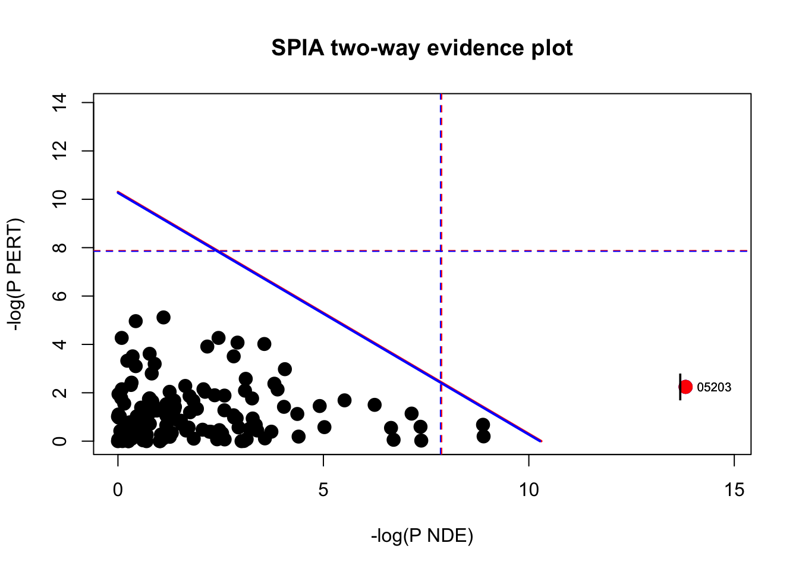
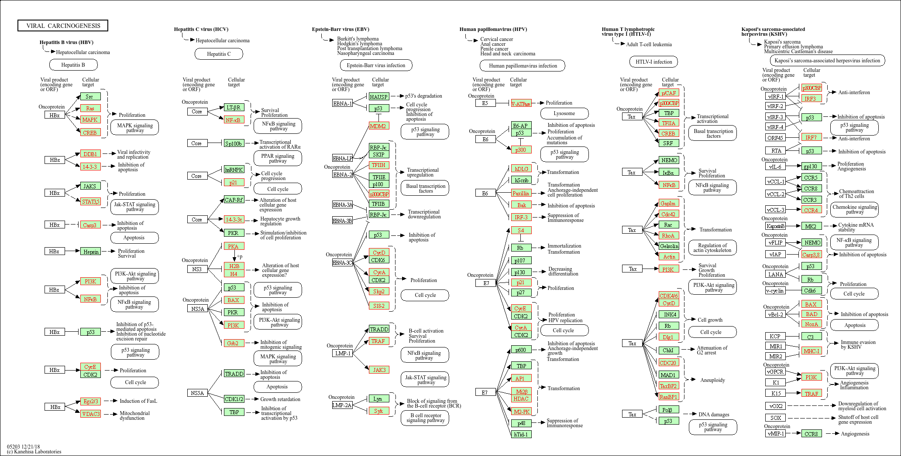

# Install package (if needed)
# BiocManager::install("SPIA")
# Load package
library(SPIA)SPIA
The SPIA (Signaling Pathway Impact Analysis) tool can be used to integrate the lists of differentially expressed genes, their fold changes, and pathway topology to identify affected pathways. The blog post from Getting Genetics Done provides a step-by-step procedure for using and understanding SPIA.
To perform SPIA, we need a list of background genes and a list of significant genes. For our background dataset we will use all genes tested for differential expression (all genes in our results table). For our significant gene list we will use genes with p-adjusted values less than 0.05 (we could include a fold change threshold too if we have many DE genes).
# The background set is a vector of all the genes represented on the platform
background_entrez <- res_entrez$entrezid
# Significant genes is a vector of fold changes where the names are ENTREZ gene IDs
sig_res_entrez <- res_entrez[which(res_entrez$padj < 0.05), ]
sig_entrez <- sig_res_entrez$log2FoldChange
names(sig_entrez) <- sig_res_entrez$entrezid
# Look at the significant gene list input
head(sig_entrez) 7105 8813 55732 2729 4800 5893
-0.4197796 0.3410360 -0.2473067 -0.2696720 -0.2883368 -0.2728536 Now that we have our background and significant genes in the appropriate format, we can run SPIA (this will take a few minutes as it runs through all the pathways):
# Run SPIA
spia_result <- spia(de=sig_entrez, all=background_entrez, organism="hsa")
Done pathway 1 : RNA transport..
Done pathway 2 : RNA degradation..
Done pathway 3 : PPAR signaling pathway..
Done pathway 4 : Fanconi anemia pathway..
Done pathway 5 : MAPK signaling pathway..
Done pathway 6 : ErbB signaling pathway..
Done pathway 7 : Calcium signaling pathway..
Done pathway 8 : Cytokine-cytokine receptor int..
Done pathway 9 : Chemokine signaling pathway..
Done pathway 10 : NF-kappa B signaling pathway..
Done pathway 11 : Phosphatidylinositol signaling..
Done pathway 12 : Neuroactive ligand-receptor in..
Done pathway 13 : Cell cycle..
Done pathway 14 : Oocyte meiosis..
Done pathway 15 : p53 signaling pathway..
Done pathway 16 : Sulfur relay system..
Done pathway 17 : SNARE interactions in vesicula..
Done pathway 18 : Regulation of autophagy..
Done pathway 19 : Protein processing in endoplas..
Done pathway 20 : Lysosome..
Done pathway 21 : mTOR signaling pathway..
Done pathway 22 : Apoptosis..
Done pathway 23 : Vascular smooth muscle contrac..
Done pathway 24 : Wnt signaling pathway..
Done pathway 25 : Dorso-ventral axis formation..
Done pathway 26 : Notch signaling pathway..
Done pathway 27 : Hedgehog signaling pathway..
Done pathway 28 : TGF-beta signaling pathway..
Done pathway 29 : Axon guidance..
Done pathway 30 : VEGF signaling pathway..
Done pathway 31 : Osteoclast differentiation..
Done pathway 32 : Focal adhesion..
Done pathway 33 : ECM-receptor interaction..
Done pathway 34 : Cell adhesion molecules (CAMs)..
Done pathway 35 : Adherens junction..
Done pathway 36 : Tight junction..
Done pathway 37 : Gap junction..
Done pathway 38 : Complement and coagulation cas..
Done pathway 39 : Antigen processing and present..
Done pathway 40 : Toll-like receptor signaling p..
Done pathway 41 : NOD-like receptor signaling pa..
Done pathway 42 : RIG-I-like receptor signaling ..
Done pathway 43 : Cytosolic DNA-sensing pathway..
Done pathway 44 : Jak-STAT signaling pathway..
Done pathway 45 : Natural killer cell mediated c..
Done pathway 46 : T cell receptor signaling path..
Done pathway 47 : B cell receptor signaling path..
Done pathway 48 : Fc epsilon RI signaling pathwa..
Done pathway 49 : Fc gamma R-mediated phagocytos..
Done pathway 50 : Leukocyte transendothelial mig..
Done pathway 51 : Intestinal immune network for ..
Done pathway 52 : Circadian rhythm - mammal..
Done pathway 53 : Long-term potentiation..
Done pathway 54 : Neurotrophin signaling pathway..
Done pathway 55 : Retrograde endocannabinoid sig..
Done pathway 56 : Glutamatergic synapse..
Done pathway 57 : Cholinergic synapse..
Done pathway 58 : Serotonergic synapse..
Done pathway 59 : GABAergic synapse..
Done pathway 60 : Dopaminergic synapse..
Done pathway 61 : Long-term depression..
Done pathway 62 : Olfactory transduction..
Done pathway 63 : Taste transduction..
Done pathway 64 : Phototransduction..
Done pathway 65 : Regulation of actin cytoskelet..
Done pathway 66 : Insulin signaling pathway..
Done pathway 67 : GnRH signaling pathway..
Done pathway 68 : Progesterone-mediated oocyte m..
Done pathway 69 : Melanogenesis..
Done pathway 70 : Adipocytokine signaling pathwa..
Done pathway 71 : Type II diabetes mellitus..
Done pathway 72 : Type I diabetes mellitus..
Done pathway 73 : Maturity onset diabetes of the..
Done pathway 74 : Aldosterone-regulated sodium r..
Done pathway 75 : Endocrine and other factor-reg..
Done pathway 76 : Vasopressin-regulated water re..
Done pathway 77 : Salivary secretion..
Done pathway 78 : Gastric acid secretion..
Done pathway 79 : Pancreatic secretion..
Done pathway 80 : Carbohydrate digestion and abs..
Done pathway 81 : Bile secretion..
Done pathway 82 : Mineral absorption..
Done pathway 83 : Alzheimer's disease..
Done pathway 84 : Parkinson's disease..
Done pathway 85 : Amyotrophic lateral sclerosis ..
Done pathway 86 : Huntington's disease..
Done pathway 87 : Prion diseases..
Done pathway 88 : Cocaine addiction..
Done pathway 89 : Amphetamine addiction..
Done pathway 90 : Morphine addiction..
Done pathway 91 : Alcoholism..
Done pathway 92 : Bacterial invasion of epitheli..
Done pathway 93 : Vibrio cholerae infection..
Done pathway 94 : Epithelial cell signaling in H..
Done pathway 95 : Pathogenic Escherichia coli in..
Done pathway 96 : Shigellosis..
Done pathway 97 : Salmonella infection..
Done pathway 98 : Pertussis..
Done pathway 99 : Legionellosis..
Done pathway 100 : Leishmaniasis..
Done pathway 101 : Chagas disease (American trypa..
Done pathway 102 : African trypanosomiasis..
Done pathway 103 : Malaria..
Done pathway 104 : Toxoplasmosis..
Done pathway 105 : Amoebiasis..
Done pathway 106 : Staphylococcus aureus infectio..
Done pathway 107 : Tuberculosis..
Done pathway 108 : Hepatitis C..
Done pathway 109 : Measles..
Done pathway 110 : Influenza A..
Done pathway 111 : HTLV-I infection..
Done pathway 112 : Herpes simplex infection..
Done pathway 113 : Epstein-Barr virus infection..
Done pathway 114 : Pathways in cancer..
Done pathway 115 : Transcriptional misregulation ..
Done pathway 116 : Viral carcinogenesis..
Done pathway 117 : Colorectal cancer..
Done pathway 118 : Renal cell carcinoma..
Done pathway 119 : Pancreatic cancer..
Done pathway 120 : Endometrial cancer..
Done pathway 121 : Glioma..
Done pathway 122 : Prostate cancer..
Done pathway 123 : Thyroid cancer..
Done pathway 124 : Basal cell carcinoma..
Done pathway 125 : Melanoma..
Done pathway 126 : Bladder cancer..
Done pathway 127 : Chronic myeloid leukemia..
Done pathway 128 : Acute myeloid leukemia..
Done pathway 129 : Small cell lung cancer..
Done pathway 130 : Non-small cell lung cancer..
Done pathway 131 : Asthma..
Done pathway 132 : Autoimmune thyroid disease..
Done pathway 133 : Systemic lupus erythematosus..
Done pathway 134 : Rheumatoid arthritis..
Done pathway 135 : Allograft rejection..
Done pathway 136 : Graft-versus-host disease..
Done pathway 137 : Arrhythmogenic right ventricul..
Done pathway 138 : Dilated cardiomyopathy..
Done pathway 139 : Viral myocarditis..# Look at the results
head(spia_result, n=20) Name ID pSize NDE pNDE
1 Viral carcinogenesis 05203 179 85 1.105913e-07
2 Pathogenic Escherichia coli infection 05130 47 26 1.384417e-04
3 RNA transport 03013 145 63 1.364787e-04
4 Epstein-Barr virus infection 05169 182 73 7.872927e-04
5 Systemic lupus erythematosus 05322 74 35 6.338994e-04
6 Parkinson's disease 05012 120 50 1.935891e-03
7 Focal adhesion 04510 182 65 2.836833e-02
8 p53 signaling pathway 04115 66 32 6.225200e-04
9 Bladder cancer 05219 40 20 4.025368e-03
10 Cell cycle 04110 121 51 1.299369e-03
11 Chronic myeloid leukemia 05220 70 29 1.719907e-02
12 Circadian rhythm - mammal 04710 21 10 5.446312e-02
13 HTLV-I infection 05166 226 87 1.219991e-03
14 ECM-receptor interaction 04512 70 26 8.644146e-02
15 Alcoholism 05034 124 49 7.371891e-03
16 MAPK signaling pathway 04010 224 76 5.975551e-02
17 Cytokine-cytokine receptor interaction 04060 122 38 3.298457e-01
18 Small cell lung cancer 05222 80 32 2.221126e-02
19 Regulation of actin cytoskeleton 04810 180 60 1.136433e-01
20 Vibrio cholerae infection 05110 48 21 2.055235e-02
tA pPERT pG pGFdr pGFWER Status
1 1.06476367 0.106 2.257992e-07 0.0000309345 0.0000309345 Activated
2 -2.68535900 0.508 7.428320e-04 0.0508839887 0.1017679775 Inhibited
3 0.14039420 0.821 1.131312e-03 0.0516632252 0.1549896757 Activated
4 -3.29767850 0.320 2.339543e-03 0.0801293411 0.3205173645 Inhibited
5 0.63886550 0.552 3.134455e-03 0.0843101831 0.4294203963 Activated
6 -3.38846958 0.223 3.776445e-03 0.0843101831 0.5173729580 Inhibited
7 22.00835240 0.018 4.381136e-03 0.0843101831 0.6002156717 Activated
8 -0.07045235 0.977 5.111940e-03 0.0843101831 0.7003358416 Inhibited
9 -4.12392474 0.185 6.108373e-03 0.0843101831 0.8368471586 Inhibited
10 2.88206442 0.578 6.154028e-03 0.0843101831 0.8431018308 Activated
11 -7.14491710 0.051 7.051281e-03 0.0844021190 0.9660255137 Inhibited
12 -5.85306921 0.017 7.392886e-03 0.0844021190 1.0000000000 Inhibited
13 -0.28565758 0.945 8.952757e-03 0.0913882483 1.0000000000 Inhibited
14 6.50476159 0.014 9.338945e-03 0.0913882483 1.0000000000 Activated
15 -7.40641835 0.234 1.270050e-02 0.1124219731 1.0000000000 Inhibited
16 8.95882802 0.030 1.312957e-02 0.1124219731 1.0000000000 Activated
17 7.49673694 0.006 1.429906e-02 0.1129193776 1.0000000000 Activated
18 9.11228085 0.093 1.483612e-02 0.1129193776 1.0000000000 Activated
19 18.84748586 0.020 1.610715e-02 0.1161410145 1.0000000000 Activated
20 -1.35210996 0.118 1.702923e-02 0.1166502561 1.0000000000 Inhibited
KEGGLINK
1 http://www.genome.jp/dbget-bin/show_pathway?hsa05203+1739+5829+578+3661+5700+1108+3725+836+581+572+5366+7187+7188+1642+5594+10488+64764+90993+9586+6777+5291+5293+5966+1959+1019+55697+5902+2648+6850+3718+595+894+896+890+4193+28973+898+9134+1233+7419+3265+3845+4893+10971+7529+7531+7532+7534+6502+2965+1387+9114+1026+5315+3065+5922+998+387+81+88+2957+991+3665+3106+3107+3133+3134+5566+5567+2885+128312+3017+440689+8341+8343+8347+8348+8349+85236+8970+554313+8360+8362+8367+8370
2 http://www.genome.jp/dbget-bin/show_pathway?hsa05130+10376+51807+7277+7846+84790+999+10971+7534+3875+1499+2017+6093+998+5578+9181+387+4691+10381+10383+203068+347733+10092+10093+10552+60+71
3 http://www.genome.jp/dbget-bin/show_pathway?hsa03013+11260+5901+7514+4686+1207+79760+3837+10073+9939+22794+22985+10482+56000+5411+10189+29107+55916+10762+4928+79902+81929+8480+23225+94026+9883+55706+5905+6612+10419+1917+51068+10209+10289+1964+8661+8662+8663+8666+8667+8668+10556+10775+10799+10940+84321+79228+132430+26986+80336+1968+8894+10605+1973+1974+1981+1982+8672+1983+1975+10460+8892+26999+9513
4 http://www.genome.jp/dbget-bin/show_pathway?hsa05169+3113+3106+3107+3133+3134+9612+10971+7529+7531+7532+7534+3303+3304+3305+3306+3310+3312+3315+4609+3065+1387+890+6502+8737+7187+7188+9020+3654+960+5602+3725+3718+5291+5293+207+208+6850+5336+5432+5433+5434+5435+5436+5438+5439+5441+11128+171568+51728+55718+661+84265+3661+9451+7431+7514+5901+5566+5567+1457+1460+1026+4193+3588+5700+5701+5702+5704+5705+5707+5708+5709+5717
5 http://www.genome.jp/dbget-bin/show_pathway?hsa05322+720+717+3111+3113+3014+8329+8334+8336+92815+94239+9555+128312+3017+440689+8341+8343+8347+8348+8349+85236+8970+126961+3020+8357+554313+8360+8362+8367+8370+6628+6632+6634+81+88+6741
6 http://www.genome.jp/dbget-bin/show_pathway?hsa05012+120892+7332+9246+2861+11315+7345+4535+4536+4537+4538+4539+4540+4541+4697+4702+4706+4708+4713+4714+4715+4717+4718+4720+4725+4726+4728+4729+54539+6391+27089+440567+4519+1340+1349+4513+4514+9377+4508+4509+506+515+518+10105+293+7416+7419+7326+7327+842+836
7 http://www.genome.jp/dbget-bin/show_pathway?hsa04510+3693+22801+3655+3672+3675+3676+3678+2318+998+85366+10627+1729+5499+6093+207+208+5170+55742+7408+5291+5293+81+88+824+5829+5578+387+5923+1280+1288+1289+1292+1302+284217+3908+3909+3911+3912+3915+7058+7059+857+331+572+2002+5594+595+894+896+3265+2885+1956+3480+5156+5159+5154+5228+25759+1398+2889+5602+3725+1499+60+71
8 http://www.genome.jp/dbget-bin/show_pathway?hsa04115+1647+4616+472+898+9134+8493+7161+900+6241+1643+1026+64393+9538+355+51512+581+8795+842+4193+1019+595+894+896+64065+51246+143686+83667+85417+891+9133+836+5366
9 http://www.genome.jp/dbget-bin/show_pathway?hsa05219+3265+4313+5228+3576+1956+999+1026+4609+1612+4193+1869+1870+2261+1019+595+9252+5594+369+3845+4893
10 http://www.genome.jp/dbget-bin/show_pathway?hsa04110+51343+4171+4172+4173+4176+4998+51434+996+6500+8454+5347+472+10971+7529+7531+7532+7534+1026+4193+1387+6502+9088+9700+8243+1647+4616+8317+991+994+990+993+85417+891+9133+890+1019+902+898+9134+595+894+896+9126+10274+1874+4609+7709+7027+1869+1870+3065
11 http://www.genome.jp/dbget-bin/show_pathway?hsa05220+2122+598+5781+3065+1487+4609+7048+7046+6777+4193+572+1026+2885+25759+9846+1398+1869+1870+1019+595+207+208+5291+5293+5594+369+3265+3845+4893
12 http://www.genome.jp/dbget-bin/show_pathway?hsa04710+79365+8553+1408+4862+9572+5187+8863+6500+8454+8945
13 http://www.genome.jp/dbget-bin/show_pathway?hsa05166+6513+10725+4773+11261+5532+5534+3718+6777+3106+3107+3133+3134+4609+8295+10524+894+3265+3845+4893+6237+293+7416+7419+7514+5901+8498+107+113+5566+5567+467+7494+7046+7048+5425+5427+56655+1026+51434+996+991+9133+5902+55697+9020+115650+5602+3725+598+331+5156+5159+5154+5291+5293+207+208+11211+8322+1855+1857+1499+1739+1019+595+896+1869+1870+2002+2005+2353+1958+1959+8061+3111+3113+2648+1387+6929+581+4605+23373+64784+4488+7538+472+94241
14 http://www.genome.jp/dbget-bin/show_pathway?hsa04512+284217+3908+3909+3911+3912+3915+1280+1288+1289+1292+1302+1605+7058+7059+3655+3676+3161+961+6382+6385+3693+22801+3678+3675+3672+960
15 http://www.genome.jp/dbget-bin/show_pathway?hsa05034+5499+5566+10488+64764+90993+9586+814+3065+808+2771+2782+2786+2790+2792+2030+3265+3845+4893+369+5594+2354+3014+8329+8334+8336+92815+94239+9555+128312+3017+440689+8341+8343+8347+8348+8349+85236+8970+554313+8360+8362+8367+8370+126961+3020+8357+4915+25759+2885
16 http://www.genome.jp/dbget-bin/show_pathway?hsa04010+5923+11221+80824+5495+9448+5321+3925+9020+5594+8649+5578+5566+5567+9693+5922+3265+3845+4893+6237+10235+2768+2885+5156+5159+2261+2263+1956+4915+785+8912+8913+9254+5154+2247+2256+8074+994+9252+7867+4149+1649+2005+2002+5536+207+208+3315+1647+4616+1616+836+7046+7048+355+8550+998+23542+5602+1398+409+2122+3303+3304+3305+3306+3310+3312+3725+4773+11261+5532+5534+2318+2353+4609+8569
17 http://www.genome.jp/dbget-bin/show_pathway?hsa04060+659+3588+8809+657+7046+7048+268+83729+3625+3624+60401+115650+3604+355+8744+970+53832+3815+1956+5159+5156+4254+1435+5154+7173+85480+3953+1271+9180+3589+1233+1235+6387+3576+27242+51330+8795+8793
18 http://www.genome.jp/dbget-bin/show_pathway?hsa05222+898+9134+595+3655+3675+9063+6257+5915+207+208+842+4149+4609+5291+5293+2272+1288+284217+3908+3909+3911+3912+3915+331+598+7187+7188+9618+1869+1870+1019+6502
19 http://www.genome.jp/dbget-bin/show_pathway?hsa04810+7114+10092+10093+10552+5216+10163+55845+50649+10152+26999+10458+1072+3985+79837+8396+1729+81+88+4478+5962+5829+5499+10627+85366+6093+9459+998+387+9138+8826+5594+369+5291+5293+1398+22801+3655+3672+3675+3676+3678+3682+3693+3265+3845+4893+6237+2768+1956+2261+2263+5156+5159+2247+2256+5154+8074+2149+60+71
20 http://www.genome.jp/dbget-bin/show_pathway?hsa05110+155066+23545+527+528+535+537+9114+9296+9550+5578+6558+5336+5566+5567+29927+55176+60+71+9601+10945+11014SPIA outputs a table showing significantly dysregulated pathways based on over-representation and signaling perturbations accumulation. The table shows the following information:
pSize: the number of genes on the pathwayNDE: the number of DE genes per pathwaytA: the observed total perturbation accumulation in the pathwaypNDE: the probability to observe at least NDE genes on the pathway using a hypergeometric model (similar to ORA)pPERT: the probability to observe a total accumulation more extreme than tA only by chancepG: the p-value obtained by combining pNDE and pPERTpGFdrandpGFWERare the False Discovery Rate and Bonferroni adjusted global p-values, respectivelyStatus: gives the direction in which the pathway is perturbed (activated or inhibited)KEGGLINKgives a web link to the KEGG website that displays the pathway image with the differentially expressed genes highlighted in red
We can view the significantly dysregulated pathways by viewing the over-representation and perturbations for each pathway.
# To avoid an error, remove any rows where `pPERT` is NA
spia_result <- spia_result %>% filter(!is.na(pPERT))
# Plot significant pathways
plotP(spia_result, threshold=0.05)
In this plot, each pathway is a point and the coordinates are the log of pNDE (using a hypergeometric model) and the p-value from perturbations, pPERT. The oblique lines in the plot show the significance regions based on the combined evidence.
If we choose to explore the significant genes from our dataset occurring in these pathways, we can subset our SPIA results:
# Look at pathway 05203 and view kegglink
subset(spia_result, ID == "05203") Name ID pSize NDE pNDE tA pPERT pG
1 Viral carcinogenesis 05203 179 85 1.105913e-07 1.064764 0.106 2.257992e-07
pGFdr pGFWER Status
1 3.09345e-05 3.09345e-05 Activated
KEGGLINK
1 http://www.genome.jp/dbget-bin/show_pathway?hsa05203+1739+5829+578+3661+5700+1108+3725+836+581+572+5366+7187+7188+1642+5594+10488+64764+90993+9586+6777+5291+5293+5966+1959+1019+55697+5902+2648+6850+3718+595+894+896+890+4193+28973+898+9134+1233+7419+3265+3845+4893+10971+7529+7531+7532+7534+6502+2965+1387+9114+1026+5315+3065+5922+998+387+81+88+2957+991+3665+3106+3107+3133+3134+5566+5567+2885+128312+3017+440689+8341+8343+8347+8348+8349+85236+8970+554313+8360+8362+8367+8370Then, if we click on the KEGGLINK, we can view the genes within our dataset from these perturbed pathways:
